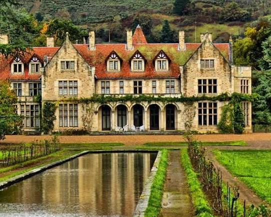
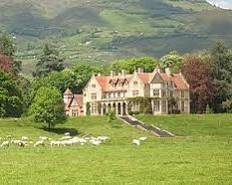
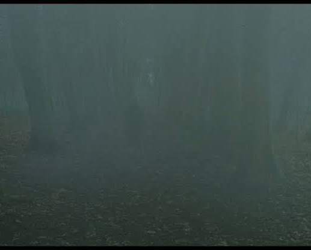
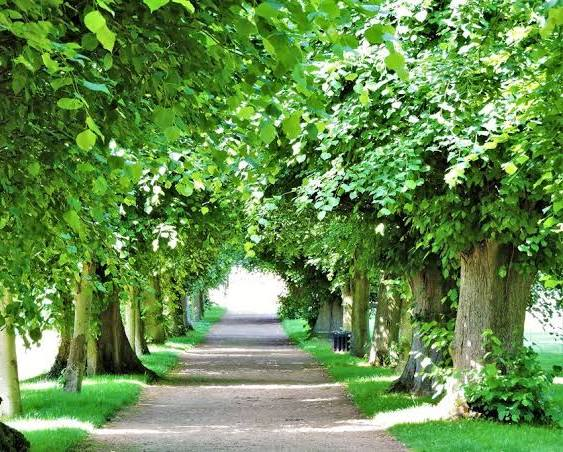
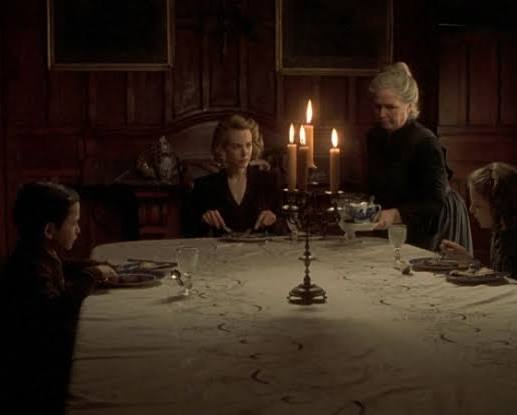
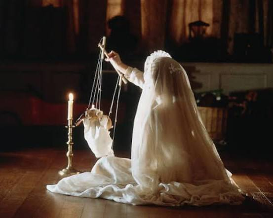

Su impacto en el cine
Los otros marcó un hito fundamental en el cine de terror de principios de los años 2000.
En una época
saturada de efectos especiales digitales y violencia explícita (gore), la película demostró el inmenso
poder
del terror psicológico clásico. Su maestría radica en generar pánico absoluto utilizando únicamente la
sugerencia, el silencio, el crujido de las maderas y las sombras.Además, representó un triunfo histórico
para el cine español. Consiguió una recaudación internacional de más de 200 millones de dólares y arrasó
en
los Premios Goya ganando 8 galardones (incluyendo Mejor Película y Mejor Dirección),
logrando el hito de ser
la primera película de la historia de la academia española hablada íntegramente en inglés. Su legendario
desenlace redefinió los giros de tuerca cinematográficos modernos, consolidándola como una obra de culto
imperecedera.
Locaciones y Espacios de Filmación
A pesar de estar ambientada en la neblinosa Isla de Jersey (Reino Unido), la producción de Los otros se
gestionó principalmente como un proyecto de ambición internacional con un fuerte arraigo logístico y
técnico en España.
-
Exteriores de la Mansión: La fachada gótica y los imponentes jardines pertenecen
al Palacio de los Hornillos en Las Fraguas, Cantabria, España. El equipo de producción
seleccionó
este palacio por su perfecta arquitectura de estilo británico.


-
El Encuentro en la Niebla: La icónica y neblinosa avenida donde Grace se
reencuentra con su esposo Charles fue filmada en The Lime Walk, un histórico sendero
ubicado en Penshurst Place, Kent,Inglaterra.


-
Interiores Controlados: Los interiores de la mansión de Los otros se
construyeron por completo desde cero en platós cerrados de Madrid, España. Al tratarse de un set
controlado, el director Alejandro Amenábar pudo manipular la oscuridad extrema y las fuentes
lumínicas con una precisión matemática.
Debido a la enfermedad de los niños, cada habitación del set se diseñó con un color de madera
específico y cortinas densas. En estas tomas interiores se aprecia cómo la iluminación dependía
casi exclusivamente de candelabros y lámparas de queroseno para acentuar el aislamiento y la
claustrofobia

